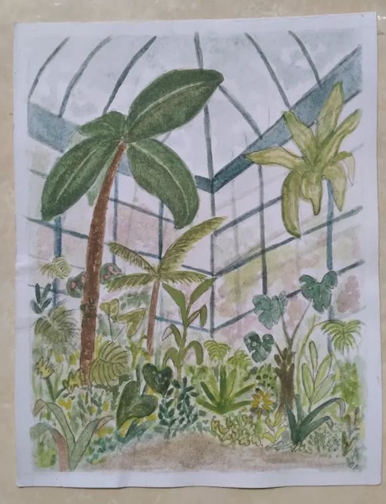

¡Hola! Soy Nimbe, una apasionada del arte y la naturaleza. Mi principal pasión es la acuarela botánica, una disciplina artística que me permite capturar la belleza de las plantas y flores a través de suaves pinceladas. Desde que era pequeña, siempre me ha fascinado la naturaleza y, con el tiempo, descubrí que la acuarela es la mejor forma de expresarlo.
A través de esta página, quiero compartir con ustedes mis obras, mi proceso creativo y los conocimientos que he adquirido en este hermoso camino de la acuarela botánica.
Mi arte es una fusión de mi amor por las plantas y mi fascinación por la pintura. Cada obra que creo busca transmitir la belleza efímera de las flores y hojas, capturando su delicadeza y colores en una pieza de acuarela. Me inspiro principalmente en los jardines que visito y las plantas que encuentro en mis caminatas.
Aquí te dejo una lista con algunos de mis gustos e intereses más importantes: